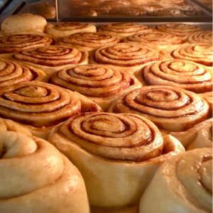
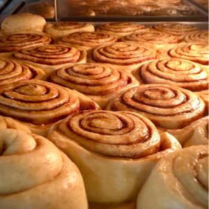

Mød Rasmus Poulsgaard
Rasmus har iværksat bageriet Blød & Sprød i området ved Godsbanen og Institut For X,
og fra det lille charmerende hul i væggen sælger han de lækreste kager og surdejsbrød.
@bloedogsproed
Følg med på Rasmus rejse og gå ikke glip af de seneste sprøde nyheder
@bloedogsproed
 

Vejen hertil
-
Oprindeligt fra Vejle
-
I forsvaret
-
Handelshøjsskolen (BSS) i Aarhus
-
Studiejob som bartender
-
Kandidat på CBS
-
Hobby bager
-
starter virksomhed med ven, og senere hen en anden virksomhed med alkoholfri cocktails.
-
Arbejder sideløbende som fotograf
-
Datter starter i skole
-
Flytter til Aarhus for bedre familiemiljø og mindre konkurrence
-
Starter Blød Og Sprød
Drømmen om fremtiden
Blød & sprød har mange drømme. Hør Rasmus fortælle om sine mange idéer og hvad han synes er spændende.

Surdejspizza til arrangementer
Man bliver ofte overrasket af lækre specialiteter når Godsbanen eller Institut for X holder større arrangementer. Det største arrangement er SPOT festival og der bliver bollen med ost udskiftet med pizza slices og bløde og sprøde toast. Glæd dig!
Quench and tickle
Det er ikke en hemmelighed at Rasmus er en sand iværksætter med specialitet i smagsoplevelser. Efter mange års erfaring som bartender, har han sammen med sin partner stiftet og iværksæt lækre cocktails på dåse, som man selvfølgelig også kan få når man kommer forbi og siger hej.